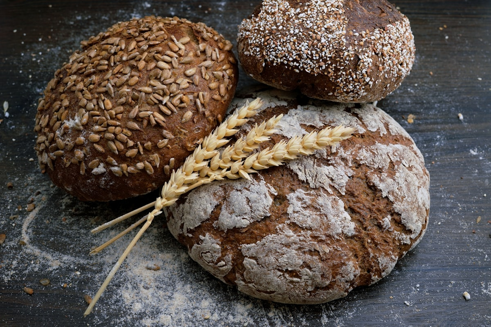

The Bedrock of Saffron Gastronomy
We are a dedicated confectionery house committed to celebrating the world's most aromatic spice through heritage pastry craft and scientific extraction precision.
From Persian Terraces to Manhattan Ateliers
Saffron Nibble was founded by food scientists and heritage pastry artisans united by a shared obsession: why was saffron so rarely tasted in its true, sublime purity? In common commercial bakeries, synthetic food colorings and artificial essences often mask inferior ingredients.
We set out to create an unshakeable bedrock of culinary integrity. We established direct relationships with multi-generational saffron farming families across Khorasan and the Kashmir Valley. By cutting out intermediaries, we ensure our harvesters receive fair compensation while our New York bakery receives freshly dried, vibrant stigmas within weeks of autumn picking.
Every confectionery item that leaves our kitchen at 181 Mercer Street represents hours of careful temperature balancing, fat-infusion testing, and precision baking.

Our Guiding Culinary Values
The four commitments that guide every recipe and every harvest selection.
Single-Origin Stigmas
We select only unmixed, unbroken Grade 1 stigmas from certified geographic micro-climates known for mineral-rich soil.
Laboratory Verified
Every lot undergoes spectroscopic ISO 3632 testing to certify crocin, safranal, and picrocrocin chemical concentrations.
Pure Whole Dairy
We use 84% butterfat European cultured butter that gently binds with saffron's natural fat-soluble pigments.
No Artificial Dyes
Zero synthetic colors, zero chemical preservatives. Our golden hue is 100% the natural gift of Crocus sativus.